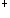

A.红霉素
B.氯霉素
C.阿奇霉素
D.甲硝唑
E.利福平
参考答案：A
题目解析：同上题。
A.立克次体
B.放线杆菌
C.脆弱拟杆菌
D.金黄色葡萄球菌
E.产气荚膜杆菌
A.G菌
B.G球菌
C.大肠杆菌，变形杆菌
D.军团菌
E.衣原体、支原体
参考答案：C
A.阿莫西林
B.红霉素
C.头孢曲松
D.林可霉素
E.万古霉素
参考答案：B
A.细胞壁上肽聚糖
B.细胞壁上脂多糖
C.细胞质中核糖体
D.细胞膜上中介体
E.细胞染色体DNA
题目解析：红霉素为大环内酯类抗生素，链霉素为氨基苷类抗生素，这两种药物的抗菌机制主要是通过作用于细胞质中核糖体，从而抑制细菌蛋白合成。故选C。
A.具有较强抗铜绿假单胞菌作用
B.具有抗DNA病毒的作用
C.为支原体肺炎首选药物
D.主要用于金黄色葡萄球菌引起的骨及关节感染
E.对念珠菌有强大抗菌作用
参考答案：D
题目解析：克林霉素对革兰阳性菌有较强的抗菌作用，主要用于各种厌氧菌及金黄色葡萄球菌等革兰阳性菌感染，对各种肺炎包括小儿吸入性肺炎，腹腔、女性盆腔厌氧菌感染，压疮引起的败血症均有效。故选D。
B.主要用于金葡菌引起的骨及关节感染
D.对念珠菌有强大抗菌作用
E.具有抗DNA病毒的作用
题目解析： 阿昔洛韦是抗病毒药物。克林霉素主要治疗厌氧菌引起的口腔、腹腔和妇科感染。对金葡菌引起的骨髓炎为首选药。也可用于需氧G 球菌引起的呼吸道、骨及软组织、胆道感染及败血症、心内膜炎等。克林霉素口服吸收好，抗菌活性高，临床疗效优于林可霉素。
参考答案：E
微信关注
 球菌引起的呼吸道、骨及软组织、胆道感染及败血症、心内膜炎等。克林霉素口服吸收好，抗菌活性高，临床疗效优于林可霉素。
球菌引起的呼吸道、骨及软组织、胆道感染及败血症、心内膜炎等。克林霉素口服吸收好，抗菌活性高，临床疗效优于林可霉素。